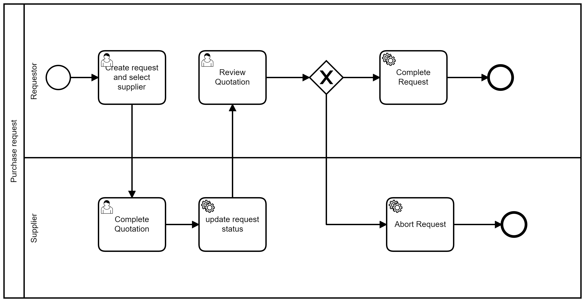

Process scenario
A user fills a procurement request (summary and description) and identify a supplier. This request is sent to
the supplier for quotation. The supplier should add the following inforamtion to the quotation: price, comments,
if he is accept or no. The status of quotation will automatically changed to completed.
After completed, the quotations are sent back to the requestor for review and selection. Before starting the
review process, the status of the request will be changed to "pending for review". In the review quotation, the
requestor should accept or reject the quotation. And finally based on the decision of the requestor, the request
status changed to completed or abort.
To effectively implement the process, developer must understand how the information is conceptually structured
and arranged within each class (suppliers, quotation and request) and how the process interacts with it.
BPMN model

UML class diagram

Next exercices